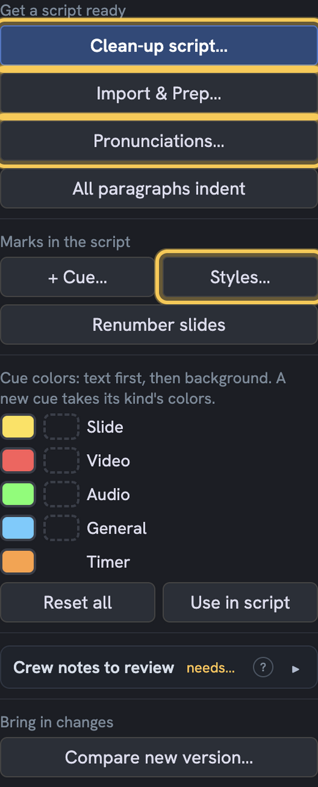
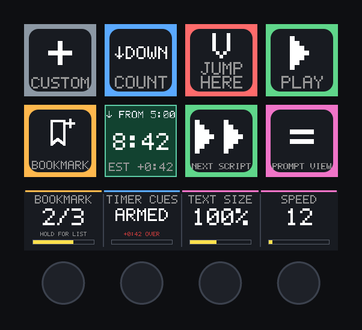

Get a script ready in a fraction of the time: import, clean up, style, respell, keep every version and mark it up.
These are the scripts you read on the prompter inside Cadence Prompt, shown as a page. In the app you press Play, read, and try each Your turn as you go. Practice is optional.
You already run a show. This series is about the part that eats your day: the prep.
More than half of it is formatting. You do not have to live with that.
Every module here is a button you can press while you read. Where it says YOUR TURN, try it.
Why this matters
A raw script is a mess. Names, stage directions, production lines and cues all run together.
Then the client sends a new version. And you do it all again.
The crew waits. The producer watches the clock, and the overtime.
Cadence is built to take that time back. Import, clean up, mark up, and keep every change straight.
Import & Prep
Press on your Stream Deck, or the Import & Prep button in the Prepare drawer.

Import & Prep opens in its own window. Nothing in this script is touched.
No deck? The button is Import & Prep….
It reads Word, PowerPoint notes, Keynote, PDF, Pages and Telescript files. And a link to a Google, Dropbox, OneDrive or Box file.
For a link, choose From link…, paste it, and the script comes in.
Your turn Open Import & Prep. Look at what it offers. Close it without bringing anything in.
It asks once
Tracked changes, tables, highlights, pictures: every file has some. Import & Prep asks what to do with each, once, and remembers.
That is the end of checking every script for the same problem.
Word's colors are never the colors you wanted. You decide here, once.
PowerPoint and Keynote decks come in with their speaker notes. A Slide cue is made for each slide.
A sheet of its own asks about slides with no notes, the Slide cue markers, and whether to include the slide pictures.
Slide pictures are new. Tell me what you find.
Put it where you want it
Add several scripts together into a master script. Or send them straight to a runlist.
Nothing opens until you say so.
A script you bring in is a copy. The original file never changes.
Your turn Bring in one of your own scripts, a Word file or a deck with notes.
Press for the next module.
Module 2
Clean-up in six steps
About 6-7 minutes
The pain
You know the old way. Find and replace in Word, a period and two line breaks. Until it hits Mr. or Mrs. and breaks a line in the wrong place.
Clean-up finds the end of a sentence for you. And it shows you what it found before it changes a thing.
The six steps
Press , or the Clean-up script button in the Prepare drawer.
No deck? The button is Clean-up script.
The steps run in order. Each shows what it found before it changes anything.
sets aside what is not for the audience: production lines, notes and comment tags. A copy of everything set aside is kept.
is the spacing: close double spaces, put each sentence on its own line, and more.
breaks a line where a presenter would breathe. After a colon, a semicolon, an ellipsis, or in a list. Each kind of break is a switch you tick.
finds who is speaking and gives each name a look.
colors the stage directions, so they stand apart from the words to be spoken.
turns lines like SLIDE 6: or Opening 3 min video into real cues.
How it asks
Walk me through it shows one decision at a time, with the line in your script. Show everything at once is the overview, with a box to tick for each finding.
Sure findings are ticked for you. The unsure ones are listed, and the decision is yours.
Cadence never decides for you what it is not sure about.
The whole run is one undo. Press and your script is back.
Try it on this mess
Below is a messy script. It has production lines, a stage direction, double spaces and a cue written as plain words. Press Clean-up and walk through it.
Mr. Alvarez will open. Then Dr. Chen will speak. Please be seated.
NOTE TO PRODUCER: cut this if we are over time
SLIDE 3: Opening film 2 min
DANA: (walks to the podium) Good morning, everyone; thank you for coming to the launch.
ANNOUNCER: Ladies and gentlemen, please welcome Dana Reyes.
Your turn Press Clean-up on the mess above, walk through it, then press Undo. Then do it on one of yours.
What it saves
Speakers, directions, cues and spacing, in one pass. A script that took an hour by hand, in a fraction of the time.
And every pass is one undo.
Over-prepared is a feeling, and this is how you get it.
Press for the next module.
Module 3
Speakers and styles
About 4-5 minutes
Who is speaking
Two presenters, a host and an announcer. In a raw script they are all the same gray block.
A style is a saved look for a speaker: a name, a color, a size and a place on the page. Give each speaker a look, and the presenter finds their lines at a glance.
A presenter who finds their place fast sounds like they are not reading.
The Styles sheet
The Styles… button in the Prepare drawer opens the one sheet for all of them.
No deck? The button is Styles….
Here you set each speaker's name, color, size, alignment and line spacing. Alignment and spacing can be set for a speaker, for a selection, or for the whole script.
A line's own choice wins, then its speaker's, then the script's default.
Your turn Open Styles…, change one color, then close it.
Let Cadence find them
You do not have to type them in. Step four of Clean-up finds who is speaking and gives each name a look.
It reads the names at the start of a line. It lists what it found, and you decide.
Then the colors are the same every time that speaker appears.
Teach it once, then reuse it for the next script.
A look for stage directions
Stage directions are not words to read. Step five colors them so they stand apart.
The presenter sees the direction and does not say it. The crew sees it and knows what is coming.
Press for the next module.
Module 4
Say it right
About 3-4 minutes
The name
Every show has one name the presenter will get wrong. Or stop to think about.
Ask how it is said, and put it where they will see it.
Select a tough word, then press . A phonetic respelling shows beside the word.
No deck? Choose Edit, then Pronunciations….
Practice here. The next line has a name that trips people. Select Siobhan and press Pronounce. Type shiv-AWN.
Please welcome Siobhan Fitzgerald.
Your turn Select Siobhan in the line above and add its respelling.
Why it works
A presenter who trusts the prompter relaxes. A presenter who relaxes reads like a person.
A respelling takes a few seconds. A mispronounced name in front of a room is not forgotten.
Press for the next module.
Module 5
Every client
About 4-5 minutes
The same client again
A client sends a script every month. Every month, you make the same choices.
A client profile remembers how you cleaned up that client's scripts. Next time they send one, Clean-up starts from the same choices.
Teach it once.
Making one
Open Clean-up. At the top of the window there is a Client profile box.
Do the clean-up the way that client likes it. Type the client's name in New profile name and save it.
Next time, pick that name in Client profile, and the steps start from the same choices.
A profile keeps which steps run, the line and break choices, the stage direction and production words, the cue kinds, and the colors given to speakers.
No deck? Clean-up is Clean-up script.
Your turn Open Clean-up and find the Client profile box. Then close it.
Why it matters to the client
The client does not see any of this. They see their script looking right, every time.
And the crew sees the same colors from one event to the next.
That is what a producer remembers when they hire an operator.
Press for the next module.
Module 6
The late rewrite
About 5-6 minutes
The worst hour
It is late. The client sends a whole new script.
The old way is to do all of it again. We have been burned by track changes enough to know it is safer to import the entire script again.
That is how a producer ends up paying a crew to wait.
Bring in a new version
Choose File, then Bring in a New Version…, and pick the new file.
You see what they changed, what you changed, and what you both did. Nothing is applied silently.
Your own edits survive.
Accuracy before speed. A late change is only fast if it is right.
Your turn Bring in a changed copy of one of yours, and look at what it shows you.
Every version is kept
Every version of your script is kept.
Choose File, then Versions…. You can put any earlier one back.
Nothing is lost, and nothing is guessed.
Show this one to the producer.
Press for the next module.
Module 7
Pictures
About 5 minutes
A picture in the script
Put a picture in the script and it scrolls with the words. Paste it, drop it in, or choose Insert, then Picture….
A small picture sits in a line as tall as the line, like an emoji: Give it a line of its own and you can make it as big as you like.

The prompter keeps its smooth scroll, because the picture's size is known before it is drawn.
Mirror and flip turn the picture with the words. Invert leaves it alone.
Plain text leaves a note where it was. Word and PDF carry it in a column of its own.
Your turn Drop a picture of yours onto the line after this one, then drag the handle in its corner to make it bigger.
A picture for each cue
Many scripts have a slide for each cue. Choose Insert, then Slide pictures from a folder…, and each slide's picture goes beside its cue.
Importing a deck can do it for you. The sheet asks whether to include slide pictures.
Slide pictures at import are new and untried against real decks. Tell me what you find.
Press for the next module.
Module 8
Highlight and Invert selection
About 3-4 minutes
One click
Brad's first fix for himself was color. In the old tool it took five moves.
Select some words, then click a color under Background in the Text drawer.
The highlight shows on the prompter too, so the presenter sees what you marked.
Invert selection makes the words black on white. Press it again and they come back.
Clear highlight takes the color off.
The Invert key does the same on selected words. With nothing selected, it inverts the whole display.
No deck? F10 is Invert. The Text drawer has Invert selection and Clear highlight.
This line is for practice: the presenter must never say it out loud.
Your turn Highlight the line above, invert it, then clear it.
That is Prep Like a Pro. Next is The Whole Room. It is about everyone else: the crew, the cue sheet, the clock and the phone in the producer's hand.
 on your Stream Deck, or the Import & Prep button in the Prepare drawer.
on your Stream Deck, or the Import & Prep button in the Prepare drawer. for the next module.
for the next module. , or the Clean-up script button in the Prepare drawer.
, or the Clean-up script button in the Prepare drawer. is the spacing: close double spaces, put each sentence on its own line, and more.
is the spacing: close double spaces, put each sentence on its own line, and more. turns lines like SLIDE 6: or Opening 3 min video into real cues.
turns lines like SLIDE 6: or Opening 3 min video into real cues. and your script is back.
and your script is back.